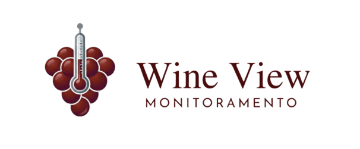

Tradição Protegida pela Precisão.
Na Wine View, acreditamos que a alma de um grande vinho tinto nasce no controle exato de cada grau Celsius.
HISTÓRIA
A Wine View nasceu dentro da SPTech, no curso de Análise e Desenvolvimento de Sistemas, a partir de um desafio: usar a tecnologia para criar algo útil, funcional e relevante. Mais do que criar um website, buscamos construir uma solução que conecte dados, design, usabilidade e impacto positivo. Este projeto representa nossa formação, nossa criatividade e a vontade de transformar aprendizado em prática.
NOSSA MISSÃO
Garantir a excelência na produção de vinhos por meio do monitoramento tecnológico, oferecendo soluções inteligentes que auxiliem no controle de temperatura, na análise de dados e na tomada de decisões na etapa do processo de fermentação alcoólica do vinho tinto. Buscamos unir tradição e inovação, utilizando a tecnologia para otimizar resultados, aumentar a eficiência e valorizar a qualidade final de cada safra.
NOSSOS PILARES
Soluções Tecnológicas
Utilizamos a inovação para modernizar processos e criar ferramentas eficientes para o setor vitivinícola.
Decisões Baseadas em Dados
Transformamos informações em insights estratégicos que apoiam escolhas mais seguras e assertivas.
Sustentabilidade
Valorizamos práticas conscientes que reduzem desperdícios e incentivam uma produção mais responsável.
Simplicidade
Acreditamos que boas soluções devem ser intuitivas, acessíveis e fáceis de aplicar no dia a dia.
QUEM FAZ ACONTECER
Somos alunos do primeiro período do curso de Análise e Desenvolvimento de Sistemas da SPTech School, unidos pelo desafio de transformar aprendizado em soluções reais por meio da tecnologia. Nossa equipe é formada por: Gabrielle Fuchs, Paola Veloso, Samara Machata, Leticia Peres, Matheus Lopes, Elisandro Santana.